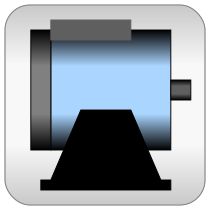

.
Modelica
.
Electrical
.
QuasiStationary
.
Machines
.
BasicMachines
Information
This package contains components for modeling quasi stationary electrical induction machines, based on space phasor theory:
package AsynchronousInductionMachines: quasi stationary models of three phase asynchronous induction machines
package SynchronousInductionMachines: quasi stationary models of three phase synchronous induction machines
package Transformers: quasi stationary three-phase transformers (see detailed documentation in subpackage)
package Components: components for quasi stationary modeling machines and transformers
Contents
Name
Description
Transformers
Library for technical 3phase transformers
Components
Machine components like AirGaps
Generated at 2020-06-05T07:38:22Z by
OpenModelica 1.16.0~dev-420-gc007a39